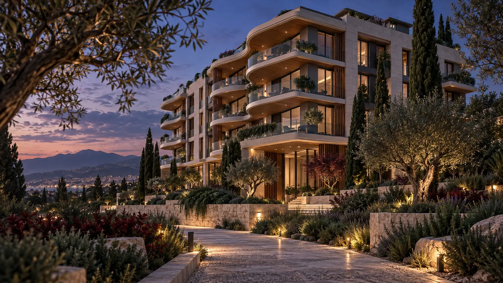

01
01Kampüs peyzajı · Akademik proje
PORTFOLYO
Akademik peyzaj projelerinden mimari görselleştirme çalışmalarına uzanan bir seçki.
5 proje gösteriliyor
01Kampüs peyzajı · Akademik proje
 02
02Kent parkı · Akademik proje
 03
03Seyir terası · Akademik proje
 04
04Villa · Görselleştirme

05Apartman · Görselleştirme
Projeler, Tunç Horuz'un eğitim ve portfolyo sürecinde hazırladığı akademik tasarım ve görselleştirme çalışmalarından oluşur.